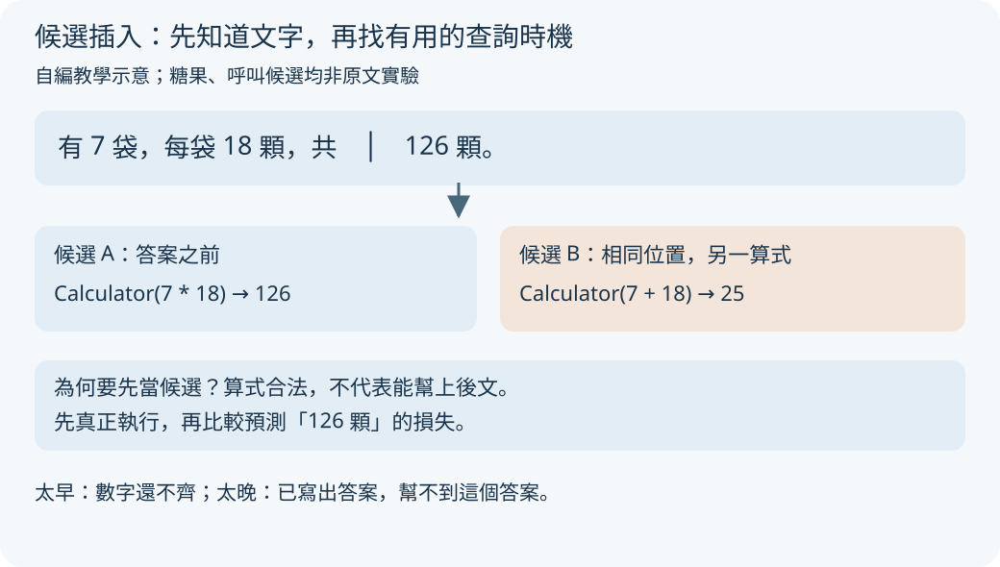
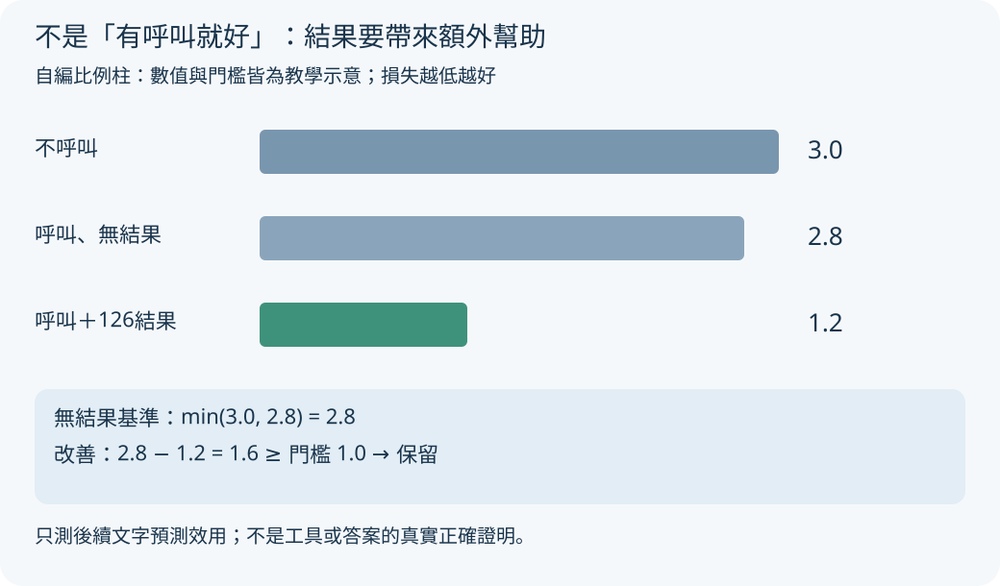
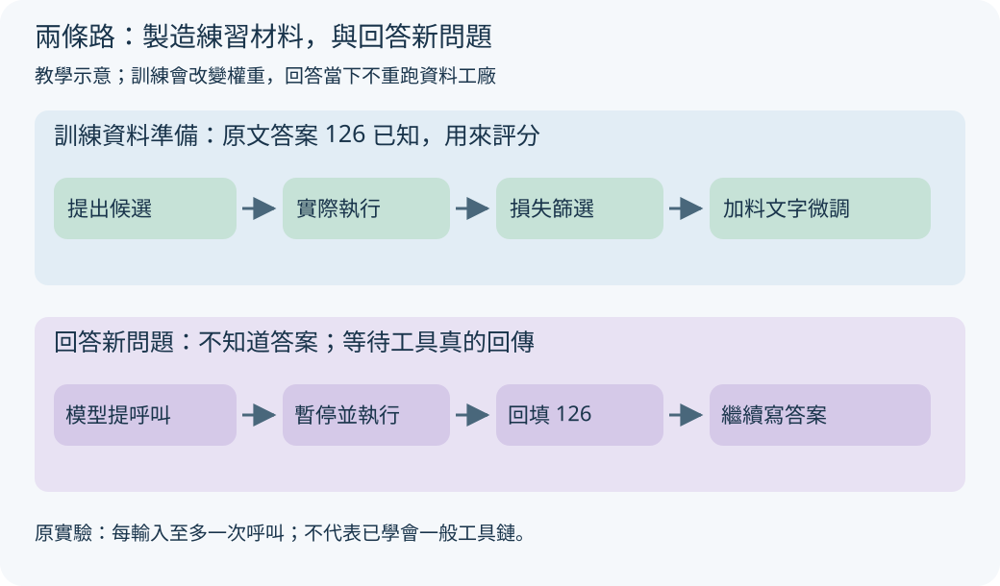

老師不用在每一題旁邊提醒「拿計算機」。可以先整理一批例子，找出計算機真的幫得上忙的時刻，再拿這些例子教模型。Toolformer 研究的就是這間資料工廠。
七袋糖果，什麼時候該拿計算機？
你有 7 袋糖果，每袋 18 顆，共有幾顆？手算可拆成 7 × 10 加 7 × 8，也就是 70 加 56，得到 126。語言模型卻可能只接出一個很像答案的數字。Toolformer 想教它：寫到需要計算的位置，自己叫計算器幫忙。
以下糖果、候選呼叫、損失數值都由本頁自編，是教學示意，不是原文實驗。原論文研究的是如何製造能教模型用工具的訓練資料，而非替每個算式人工寫一份解題流程。
在哪裡放計算器？

放大閱讀圖解 ↗ · 窄螢幕可在圖內左右滑動。

圖解文字說明
- 插入位置
原文是「有7袋，每袋18顆，共126顆」；圖把候選放在「共」與「126」之間，讓工具結果趕在答案之前出現。太早時數字未齊，寫完答案才呼叫則幫不到這個答案。
- 同位置的兩個候選
候選A是Calculator(7 * 18)，執行回傳126；候選B是Calculator(7 + 18)，執行回傳25。兩者都先當候選，不能只因合法算出數字就拿去訓練。
- 接著執行與篩選
將回傳送進後續文字預測評分，檢查是否真的幫模型接出「126顆」。這是自編示意，不是原文測量。
資料工廠第一站：在文字裡試放工具呼叫
工廠拿到的原文字已經是「有 7 袋，每袋 18 顆，共 126 顆」。它要找的是：在模型讀到答案以前，哪個位置插入什麼工具呼叫，最能幫它接出後面的文字。
先給模型少量人工撰寫的工具示範，讓它試著在不同位置提出候選。答案前插入 Calculator(7 * 18) 是一個候選；同處插入 Calculator(7 + 18) 也是可能產生、但尚未證明有用的候選。少量人工示範不是零人工。方法見原文第 2 節及圖 2、圖 3。
為什麼要找位置？工具就像旁邊的便條紙，最好在用得到內容之前出現。若先寫完「126 顆」才查計算器，就幫不到預測這個答案。這是教學直覺；實際位置由模型的呼叫起始機率與取樣門檻篩選。
第二站：真的執行，不能靠模型假裝結果
把候選交給計算器：7 * 18 回傳 126，7 + 18 回傳 25。工具輸入、工具輸出都要能寫成文字，才能放進訓練材料。模型提出計算式，工具負責算，不是讓模型自己填一個自稱來自工具的數字。
執行後仍不能把全部候選直接拿去訓練。加法算式本身算對了，卻沒有回答糖果總數；必須再檢查它有沒有幫模型接出原文後面的「126 顆」。
三種損失，先取小再比較

放大閱讀圖解 ↗ · 窄螢幕可在圖內左右滑動。

圖解文字說明
- 三條比例柱
自編損失為：不呼叫3.0、呼叫但無結果2.8、呼叫加上126結果1.2。柱長依損失成比例，越短表示越容易預測後續原文。
- 先取較佳基準
先取無結果兩種情況的較小值：min(3.0, 2.8) = 2.8，以免把呼叫文字本身的提示效果誤算成結果效益。
- 再算改善與門檻
改善為2.8 − 1.2 = 1.6，大於等於自編門檻1.0，因此保留。這只能支持後續文字預測效用，不是真實正確證明。
第三站：三種情況，比誰更能接出原文
損失是模型預測後續文字的失誤分數，越低表示越容易預測原文的後續 token；token 是模型處理文字的小單位。工廠比較三種情況：完全沒呼叫、只有呼叫但不給結果、呼叫加上真正結果。
自編例子：完全沒呼叫的損失為 3.0；只有乘法呼叫、沒有結果為 2.8；拿到 126 後為 1.2。先取前兩者中較小的 2.8，再減 1.2，改善為 1.6。若教學門檻設為 1.0，這個候選通過。
為何還要比較「只有呼叫」？因為問題文字或計算式本身也可能提示答案。作者要檢查的是工具結果是否帶來額外幫助，不只是多塞了一段文字。上述分數與門檻全是教學數字；原文第 2 節給出正式判準。
損失下降只證明這次資料有助模型預測後續文字，不能證明工具回傳符合世界真相，也不能保證原文字的答案正確。原文第 5 節表 10 甚至列出看來不相關、卻仍降低損失的搜尋呼叫。
資料工廠與回答現場分兩條路

放大閱讀圖解 ↗ · 窄螢幕可在圖內左右滑動。

圖解文字說明
- 上路：訓練資料準備
已知原文答案126，先提出候選，再實際執行，以後文損失篩選，最後把保留呼叫插回文字並微調。微調會改變模型權重。
- 下路：回答新問題
不知道答案時，模型提出呼叫，控制程式暫停生成並真正執行，回填126，再由模型繼續寫答案。回答當下不重跑資料篩選工廠。
- 兩路的限制
原實驗每個輸入至多一次呼叫，不能把這個單次流程當成已學會一般工具鏈。
第四站：把留下的範例拿去微調
工廠把通過的呼叫插回原文，再用這批加料文字微調 GPT-J，也就是透過訓練改變模型權重。它學的是何時呼叫、呼叫哪個工具、填什麼輸入，以及怎樣使用回傳。這不是只在對話開頭貼一段提示。
訓練資料準備時知道後面的「126」，所以能拿它評分；真正回答新問題時並不知道答案。推論時，模型寫出呼叫與等待結果的標記，控制程式暫停生成、執行工具、放回結果，模型再繼續寫。兩條路不能混在一起。第 2 節描述微調與推論流程。
自編示意：
原文：有 7 袋，每袋 18 顆，共 126 顆。
加料訓練文字：有 7 袋，每袋 18 顆，共 [Calculator(7 * 18) -> 126] 126 顆。
回答時：模型提出 Calculator(7 * 18)
控制程式：暫停 → 真正執行 → 插回 126
模型續寫：共有 126 顆。和 ReAct 的差別，以及不能跳過的限制
ReAct 主要用少數完整示範引導模型，把整理線索、行動與觀察接成解題軌跡；Toolformer 主要把工具呼叫自動加進訓練文字，再微調模型。兩者都需要真正的工具執行，但學習工具使用的路徑不同。這是本頁的方法比較，ReAct 另見其第 2 節。
Toolformer 原實驗每個輸入至多允許一次工具呼叫，避免不停呼叫卻沒有答案。第 7 節也明說：訓練呼叫獨立產生，缺少把前一工具輸出交給下一工具的例子，不支援一般工具鏈；搜尋也不能互動式改查詢、逐筆瀏覽結果。不能把它看成已完成的通用多步代理。
是否呼叫還受題目措辭影響；方法沒有把不同工具的計算成本納入呼叫判準。損失改善大，不等於速度快、費用低或真實答案可靠。這些限制來自第 4.2 節與第 7 節。
公式細節：留下的是什麼效用？
設 L+ 為呼叫與結果都提供時的後續文字加權交叉熵損失。L− 是「不呼叫」與「呼叫但無結果」兩種損失的較小值。僅保留 L− − L+ ≥ τf 的候選，τf 是篩選門檻。這是第 2 節的判準。
正式評分時，作者把呼叫與結果放成前綴，而非直接插在中間，以免尚未微調的模型因文字被打斷而提高損失；真正製作微調資料時才把保留呼叫插入原位置。原文第 2 節註腳 3 說明這個區別。
第 4.1 節使用較偏重鄰近後續 token 的權重函式，並依工具設定取樣與篩選門檻。這是局部預測效用的訓練資料篩選器，不是真實世界正確性的裁判。
實驗證據：不要只記「小模型勝大模型」
原文以 6.7B 參數的 GPT-J 為基礎，見第 1 節、第 4.1 節。第 4.2.2 節表 4 的 ASDiv 成績為 Toolformer 40.4、停用工具的 Toolformer 14.8、GPT-3 14.0；這是該資料集、該解碼與評分設定下的結果。數學評分取預測中的第一個數字，若有等式則取等號後的數字，不是逐步解題過程的完整正確率。
不能外推為所有任務都勝過 GPT-3。第 4.2.3 節表 5 的 WebQS，Toolformer 為 26.3、GPT-3 為 29.0；問答評分檢查前 20 個預測詞是否包含答案，與數學評分不同。
原文第 4.3 節表 8 的純語言模型測試，停用工具的 Toolformer 與在無工具 CCNet 資料微調的比較模型，WikiText 困惑度同為 10.3、CCNet 同為 10.5。它支持這兩項測試未見額外損失，不能證明所有能力永遠不退步。
原文閱讀路線
先看圖 1，辨認工具呼叫如何嵌入文字；再看圖 2，把候選、執行、篩選三站接起來；圖 3 讓你直接看到人工示範長什麼樣。
讀第 2 節時先掌握三種損失，再看註腳 3，區分評分前綴與訓練插入位置。接著讀第 4.2 節的至多一次呼叫設定、第 5 節表 10 的失敗例，最後讀第 7 節限制。
本庫另有重點摘要與繁中精要逐節翻譯；數據與方法應回原文核對。正式站不把本頁自編比例柱當成原文測量值。
原文與來源
此頁依下列固定快照編寫；教學例子與程式片段用來解釋方法，請回到原文確認研究設定與結果。
- arXiv 原始論文 2302.04761 ↗（公開）
- 原庫專屬導讀／閱讀筆記 ↗（私有庫，需要 GitHub 存取權；快照 6c07331）
- Toolformer 原論文：圖 1–3、第 2 節方法 ↗
- 實驗：第 4.2 節表 4、表 5 ↗
- 限制：第 7 節 ↗
- ReAct 方法比較：第 2 節 ↗
- Toolformer arXiv 入口 ↗